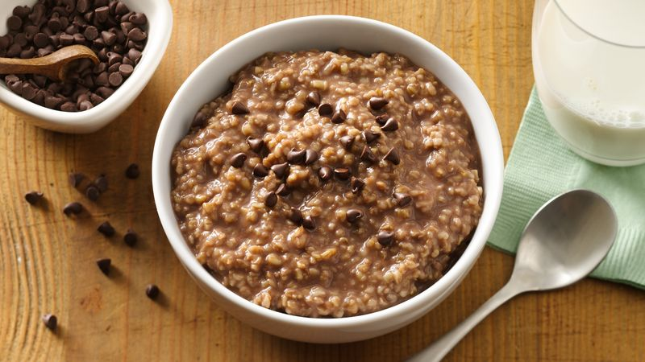

Jonathan's Choclate Oatmeal

Description
This creamy, chocolatey oatmeal is great as a dessert or for anyone who just wants a sweet breakfast! If you're not too fond of oatmeal by itself (eww) then give this recipe a try and it might change your mind!
With just a little bit of oatmeal, chocolate, and a secret ingredient, you might want to branch out to other oatmeal recipes after enjoying this delicious dish.
Ingredients
- 1/2 cup of quick oats
- handful of chocolate chips
- 1/4 cup almond milk
- 2 tsp brown sugar
- pinch of salt
- 3/4 cup cup of water
Optional Ingredients
- 1/2 a banana (optional)
- 1 tbsp peanut butter (optional)
Directions
- Begin boiling 1 cup of water
- Place the quick oats, brown sugar, salt, and chocolate chips in a bowl
- Peanut butter is a great source of protien and flavor. If you want it, you can add it along with the other ingredients now
- When the water is done boiling, slowly pour it into the bowl while slowly stirring. If you added peanut butter, its important to make sure it melts
- Mix until the oatmeal is a consitincy to your liking (some enjoy thick oatmeal while others enjoy creamy oatmeal)
- If you'd like, you can slice a banana and add it to the top along with a few chocolate chips for presentation